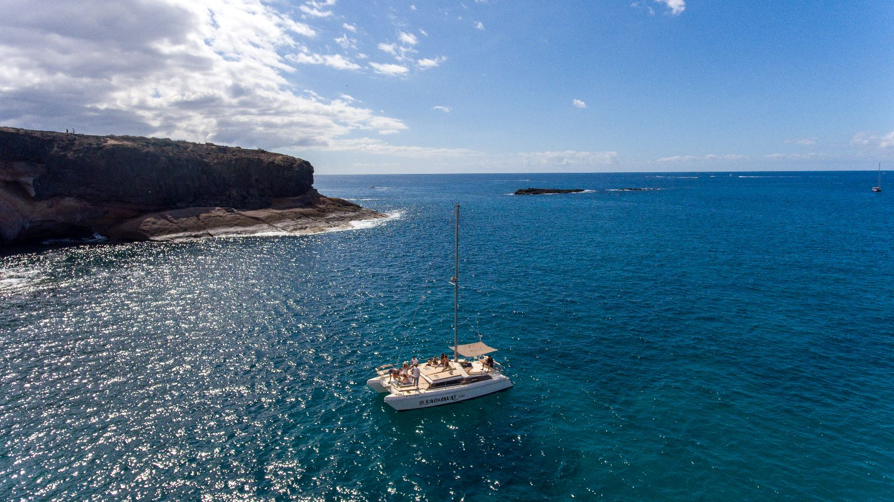
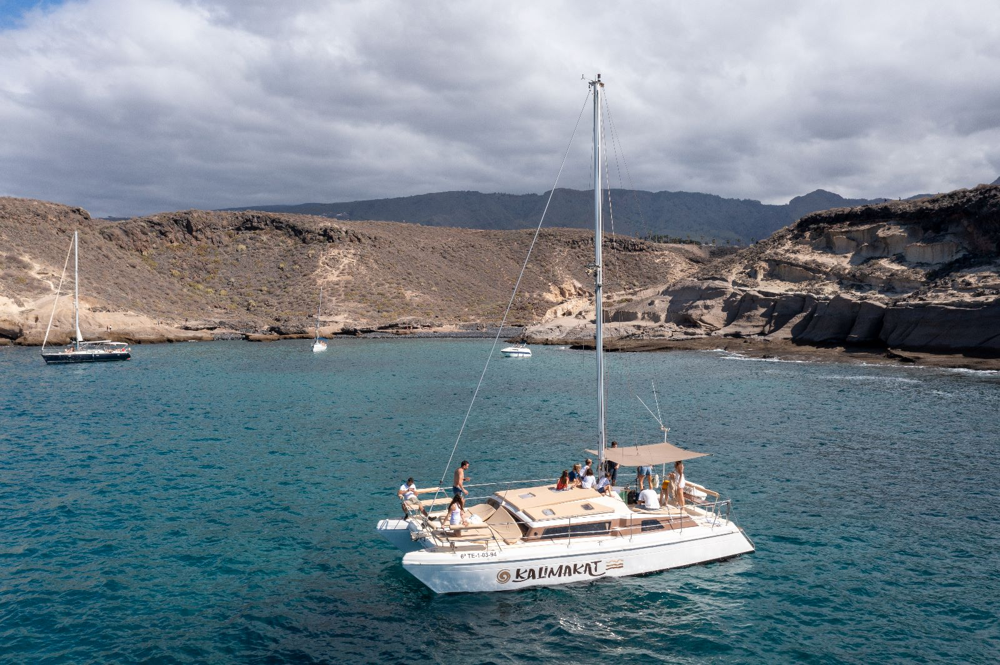
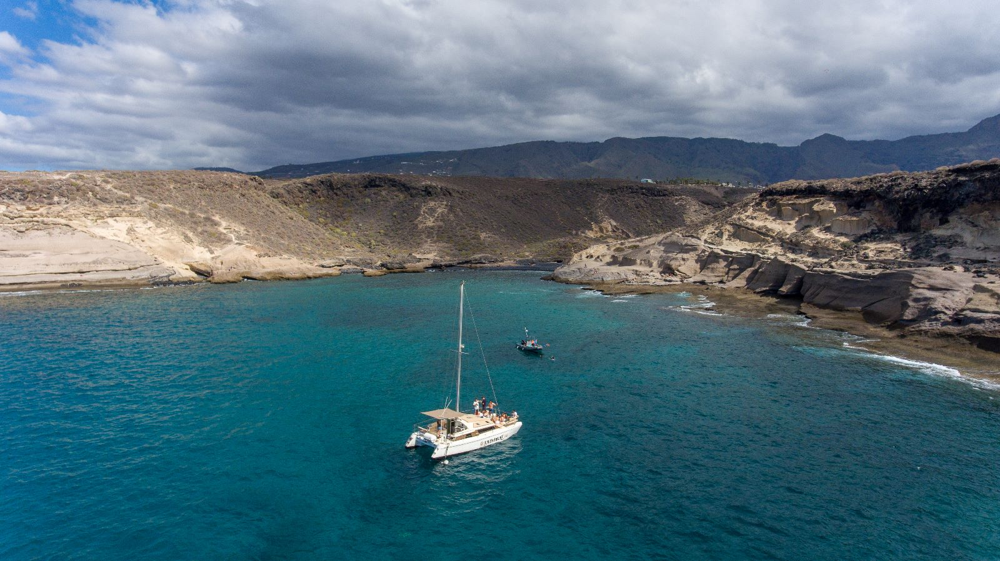
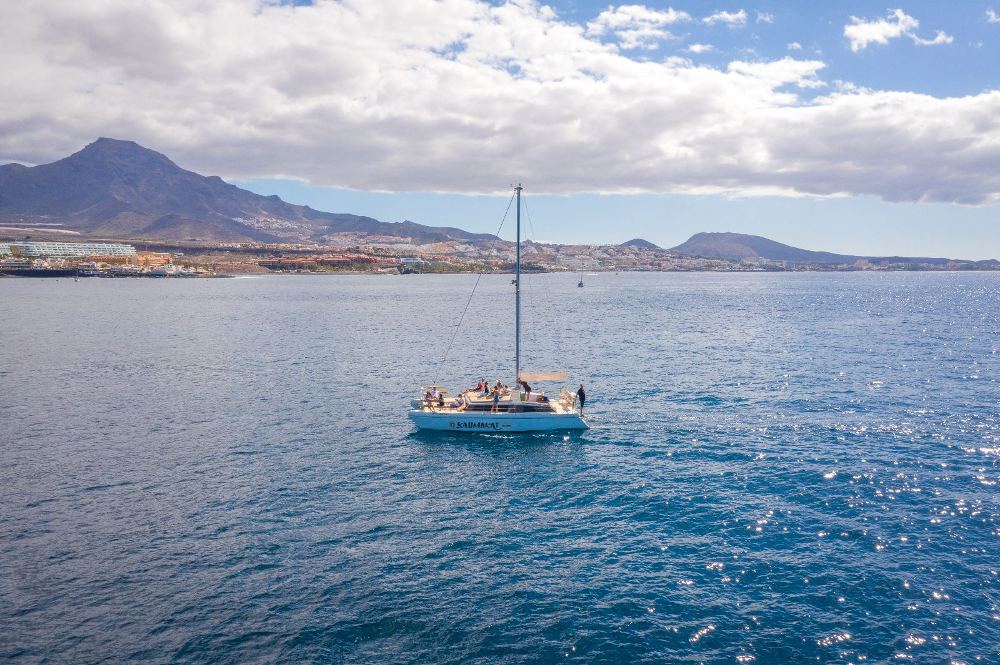
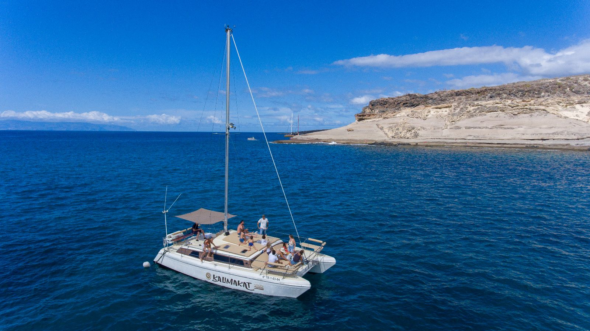
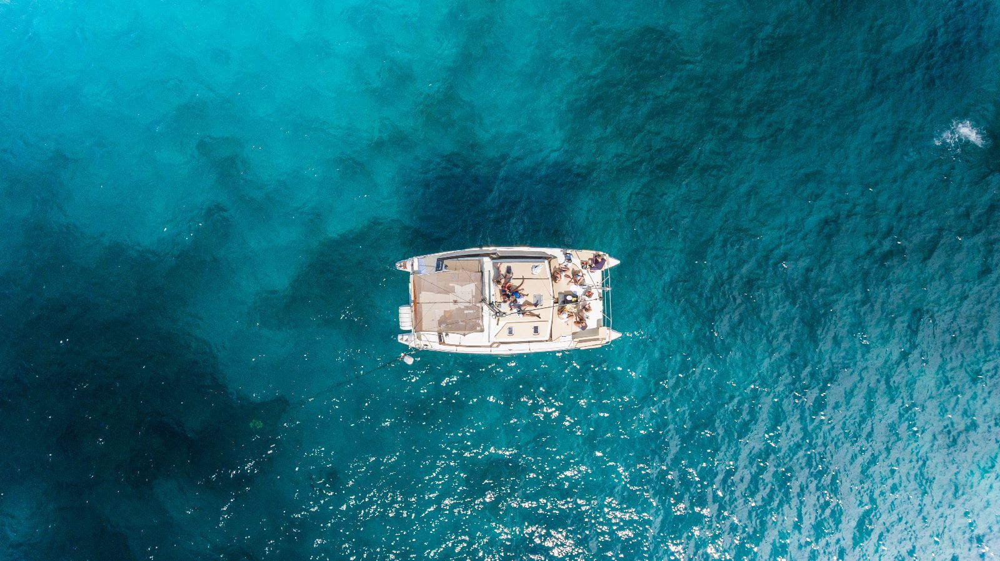
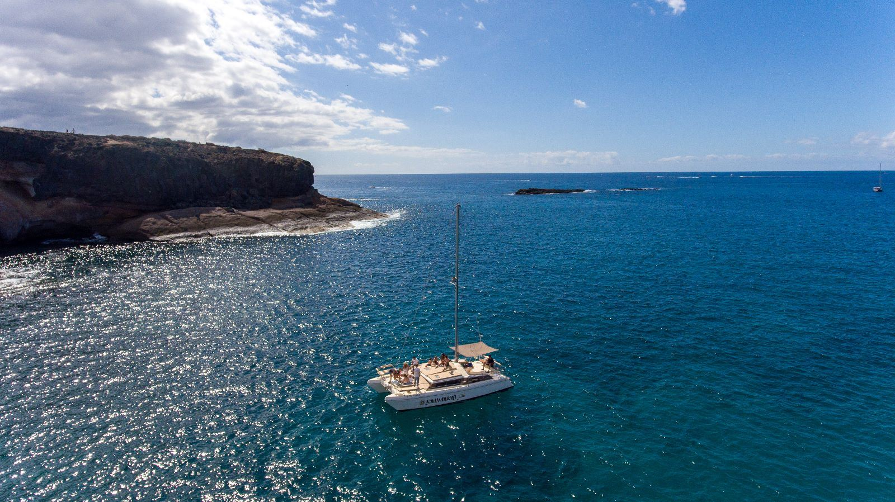
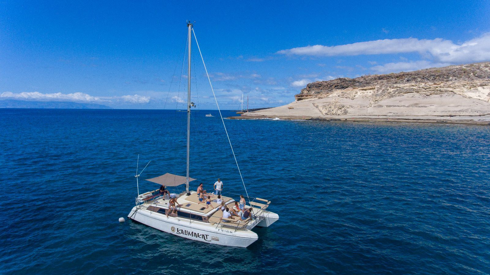

Il catamarano è la formula più stabile, comoda e fotogenica per una giornata in mare. Due scafi, ampia zona prendisole, rete a prua per stendersi, salone interno per ripararsi quando serve.
Catamarano privato in uso esclusivo, fino a 22 persone, con partenza dalla zona di Costa Adeje: 3 ore di navigazione tra spiagge e scogliere, avvistamento responsabile di balene pilota e delfini, sosta bagno e snorkel in mare aperto. A bordo equipaggio professionale, aperitivi e bevande, attrezzatura snorkeling. Puoi scegliere tra tre menù inclusi oppure un catering esterno su richiesta tramite i nostri partner. Perfetto per compleanni, addii e feste private.
Avvistamento balene pilota e delfini nella zona riconosciuta dall'OMS come "Whale Heritage Site".
Sosta in baie protette, snorkeling tra rocce vulcaniche, pranzo all'ancora.
Partenza pomeriggio tardi, aperitivo in navigazione, tramonto al largo, rientro al porto.
Festeggia il tuo evento speciale a bordo: addio al celibato/nubilato, compleanno, anniversario, evento aziendale.
Quando vuoi salpare? Quanti siete? Ti faccio un preventivo su misura.
💬 Contattaci su WhatsApp